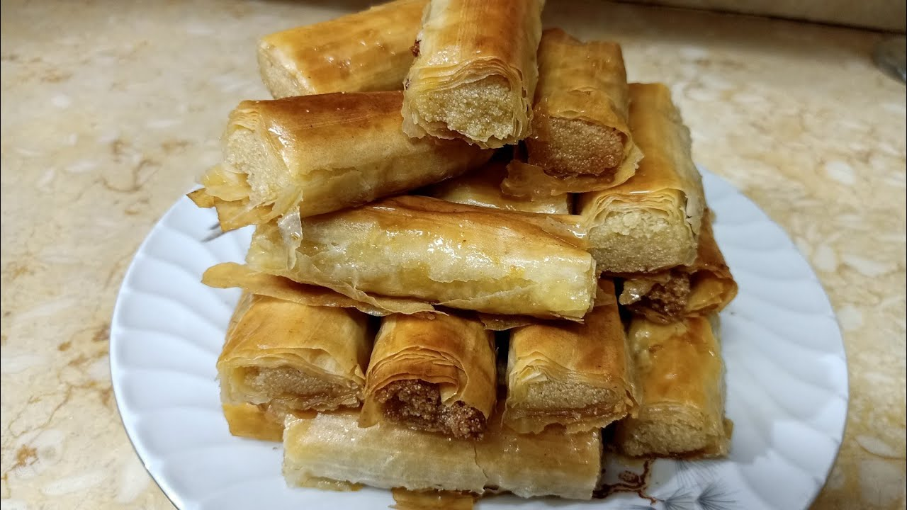

Goulash Fingers with Sausage

Description
Goulash is one of the famous and beloved dishes in Egypt, and it is one of
the main types in banquets, for its distinctive taste that is preferred by
many families. We usually stuff it with minced meat or chicken, but what
is new and presented by Food Today is a new recipe for goulash fingers
with sausage.
Ingredients
- Goulash
- Ghee
- Sausage
- Onion
- Garlic
- Tomato
- Dried coriander
- Colored pepper
- Harissa pepper
- Salt
- Black pepper
- Spices
- Cumin
- Parsley
- Fresh coriander
- For the face:
- Egg
- Milk
How to prepare
-
Heat the pan and put a little ghee, then put the sausage, and stir them
a little, then put the garlic, cumin, dried coriander, and spices, and
stir them.
-
Then put the onion in the middle and stir them a little, then remove the
sausage and continue stirring the onion and add the colored pepper and
harissa and stir them together.
-
Add the coriander, parsley, and tomatoes and stir them together, then
add the sausage again and put the salt and pepper and stir them and
leave them until they are cooked.
-
Prepare the goulash and put the sausage in it with the mixture (and wrap
it) roll and repeat this step with the rest of the goulash until we have
goulash fingers and put it in a tray.
-
Prepare a dish or bowl and put an egg, milk, and a little or a small
spoon of ghee in it and mix them, then grease the goulash fingers with
them and put it in the oven until it is cooked. And that’s it… Bon
appetit.
Back to Home